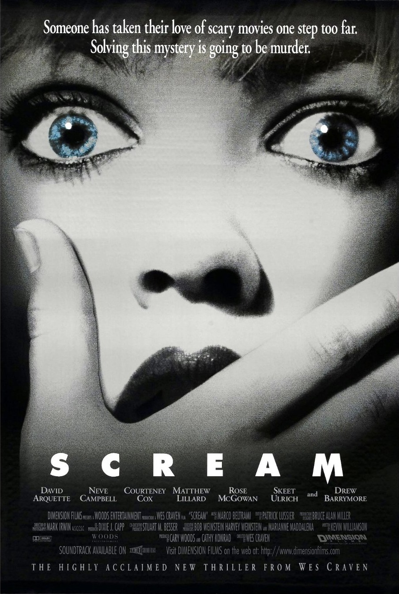
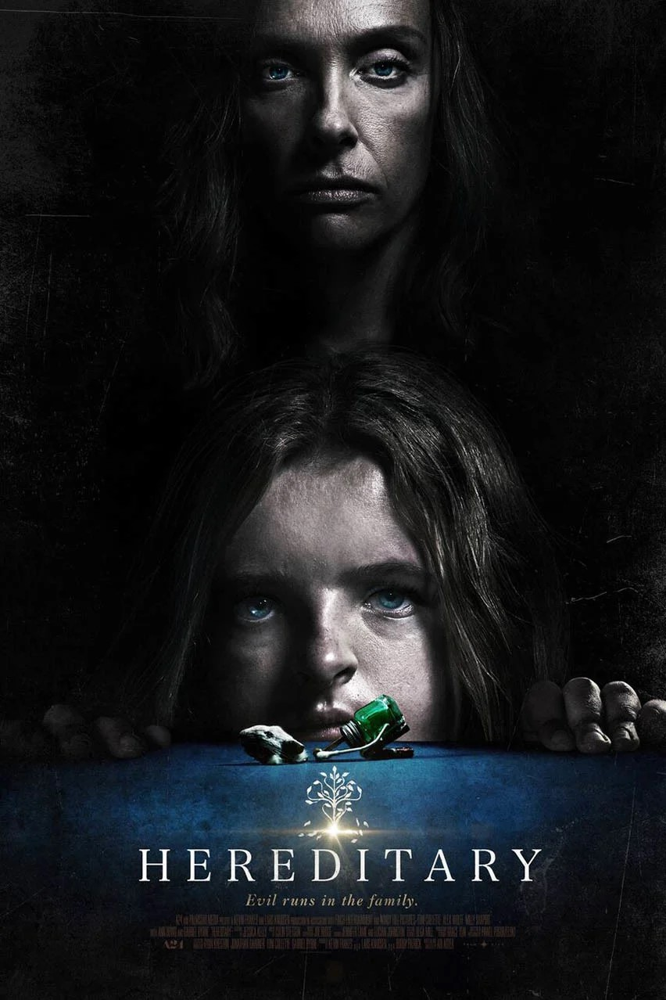

|  | Um grupo de jovens enfrenta um assassino mascarado que testa seus conhecimentos sobre filmes de terror. A pequena cidade de Woodsboro nunca mais será a mesma. Minha resenha: Esse filme é um clássico da categoria terror, lançado em 1996, acabou por se tornar uma trilogia com 5 filmes, seguindo a mesma dinamica do primeiro. É um filme muito bom, onde explora os aspectos da vida adolescente nos anos 90, com um pouco de suspense envolvido. |
|---|---|
|  | Após a morte da reclusa avó, a família Graham começa a desvendar algumas coisas. Mesmo após sua partida, ela permanece como se fosse uma sombra sobre a família, especialmente sobre a solitária neta adolescente, Charlie, por quem ela sempre manteve uma fascinação não usual. Com um crescente terror tomando conta da casa, a família explora lugares mais escuros para escapar do infeliz destino que herdaram. Minha resenha: Quando se fala de terror esse é um dos primeiros filmes que me vem a cabeça, com uma atuação expetacular dos atores e um supense fora do comum, esse filme é um dos poucos que reflete o verdadeiro terror. Hereditário apresenta elementos de entidades, posseção de corpos, rituais e etc., é completamente diferente do primeiro filme que eu apresentei, porém não deixa de ser bom, é um filme muito bom. |
| Finney Shaw, de 13 anos, é sequestrado por um sádico assassino mascarado e mantido em um porão à prova de som. Até que um telefone desconectado na parede começa a tocar, e ele logo descobre que pode ouvir as vozes das vítimas anteriores do maníaco. Minha resenha: Sendo um filme relativamente atual, ele bombou na categoria terror, pois é um filme muito bom que até hoje os fãs esperam uma continuação. Esse filme trata sobre um assunto importante, o sequestro de crianças no Estados Unidos, é um filme muito bom, que trás medo, suspense, o sobrenatural, e a critica sobre o assunto tratado. |